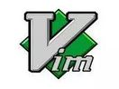
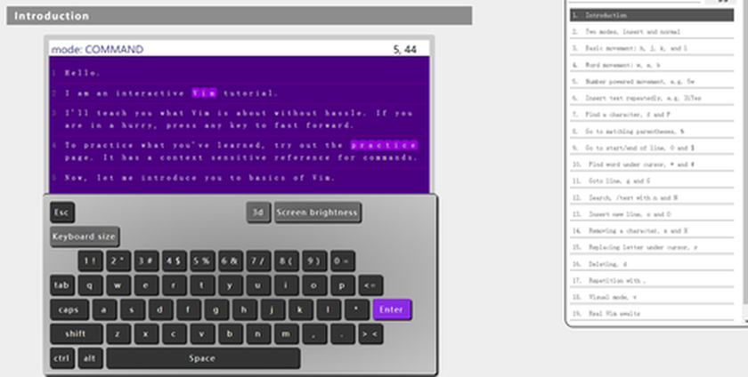

游戏化培训示例-vim互动培训
vim是什么
vim是一款编辑器，基于vi，对于开发者来说，vim的用途非常广泛。但是，对于初学者来说，vim又显得非常不友好，甚至连退出都不是那么简单。对于熟悉vim的人来说，这是一个非常好的工具。甚至可以不依赖鼠标就能完成所有的编辑工作。 VIM是自由软件。Vim普遍被推崇为类Vi编辑器中最好的一个，事实上真正的劲敌来自Emacs的不同变体。1999 年Emacs被选为Linuxworld文本编辑分类的优胜者，Vim屈居第二。但在2000年2月Vim赢得了Slashdot Beanie的最佳开放源代码文本编辑器大奖，又将Emacs推至二线， 总的来看， Vim和Emacs在文本编辑方面都是非常优秀的。生于上世纪80年代，如今21世纪20年代，依然排名第五. - 
vim互动培训
既然是难点，总会有人去克服，于是有人做了用游戏的方法去学习vim的课程，游戏着就把这款难用但效率非常高的编辑器学了
- 第一个是[openvim]](https://www.openvim.com/)简单明了的vim培训
-  第二个游戏化培训vim的站点是，
- [vim游戏化培训]](https://vim-advntures.com/) Vim Adventures是Doron Linder出色的龙-教育游戏。它着重于讲授Vim文本编辑器中使用的许多流行命令和动作。通过一个类似于《龙与地下城》的文本冒险游戏来完成学习过程。